Workwayz User Manual
Welcome to the comprehensive reference guide for Workwayz (formerly ProjectFlow). This manual details all operational flows from initial installation to executive portfolio governance.
1. Setup Wizard
When opening Workwayz for the first time, you are presented with a streamlined 5-step guided wizard to configure core persistence, authentication, administrator credentials, and artificial intelligence providers.
1.1 Database & Authentication Providers
Workwayz is built to be completely cloud-agnostic and self-hostable. You can choose between:
- Supabase (Cloud or Local Docker): Ideal for fully self-hosted, air-gapped, or privacy-first deployments. Uses Supabase Auth and PostgreSQL.
- Firebase (Google Cloud): Ideal for serverless setups using Firestore and Firebase Authentication.

1.2 Super Admin Account Creation
Once database connectivity is established, Workwayz prompts you to create the initial master administrator (SuperAdmin) account. This account possesses full control over role permissions, billing rates, and system settings.
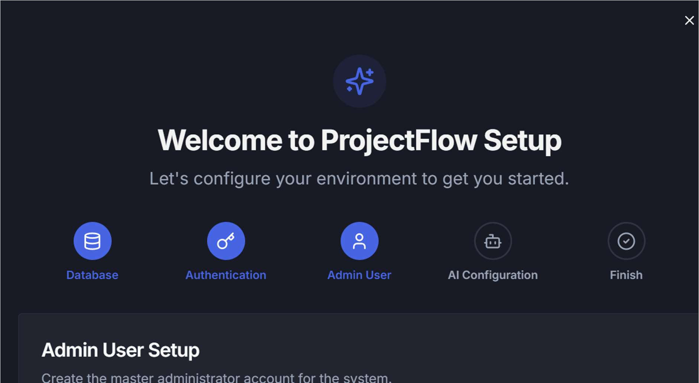
1.3 Pluggable AI Configuration
Workwayz features a modular AI adapter system. The platform will operate smoothly without AI, but enabling AI powers tech stack recommendations, horizontal effort ratios, automated risk analysis, and assumption generation.
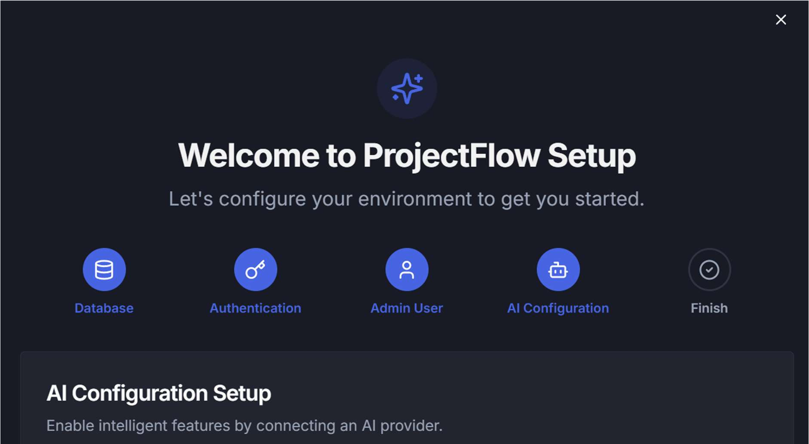
2. User Lifecycle & Resource Management
Manage team members, billable daily rates, internal cost bases, utilization heatmaps, and enterprise leave calendars across active projects.
2.1 User Pools & Enablement Workflow
New team members can self-register or be provisioned directly by an Administrator. Upon self-registration, accounts enter an Approval Pending state. Administrators are notified to enable the user and assign appropriate global billing and internal cost rates.
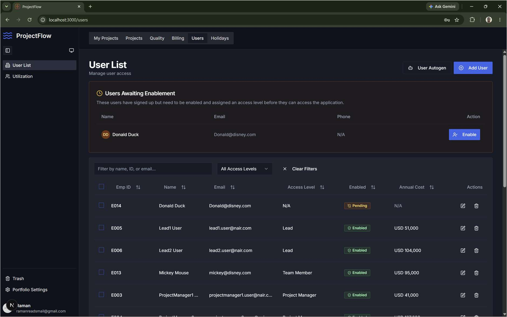
2.2 Resource Utilization Heatmap & Availability
Search any engineer or manager to inspect their active project allocations, monthly occupancy percentage, and exact date when they become available for upcoming initiatives.

2.3 Multi-Project Leave Reflection & Holidays
When a team member applies for leave in the central Leave Tracker, their unavailability is automatically reflected across every project and sprint they participate in. This eliminates double-booking and prevents unauthorized side-project commitments.
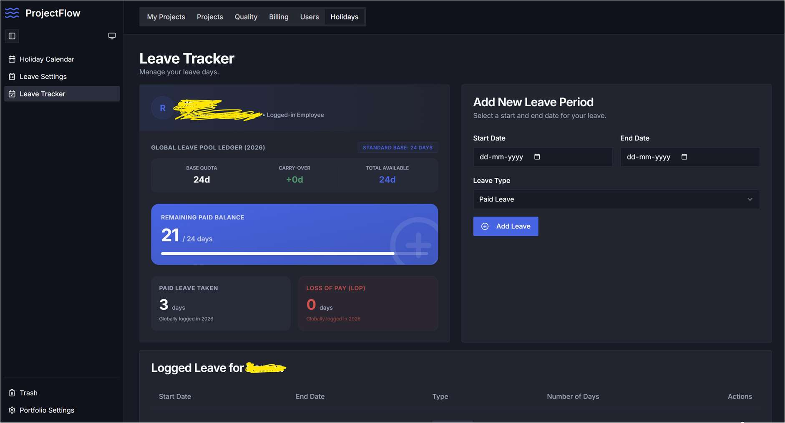
3. AI-Powered Initial Estimation Flow
Transform high-level client briefs into realistic, system-decomposed budget proposals in minutes using Workwayz's intelligent scoping engine.
3.1 AI Tech Stack Suggestions
Paste your project requirements into the project summary. Click Stack Suggest, and the AI evaluates the scope to recommend 3 complete architectural blueprints (e.g. Next.js Full-Stack Suite, AWS Serverless, Golang Microservices) with identified impacted subsystems:
- Frontend & API Layer
- Product & User Database
- Authentication & Session Management
- Third-party Integrations (Payments, ERP, etc.)

3.2 Horizontal Strategy & Staffing Ratios
Click AI Horizontal Suggest to automatically balance delivery roles across Project Management, Quality Analysis, Business Analysis, Solution Architecture, UI/UX Design, and DevOps based on proven delivery archetypes (e.g. Lean Agile Startup vs. Secure Enterprise Retail).
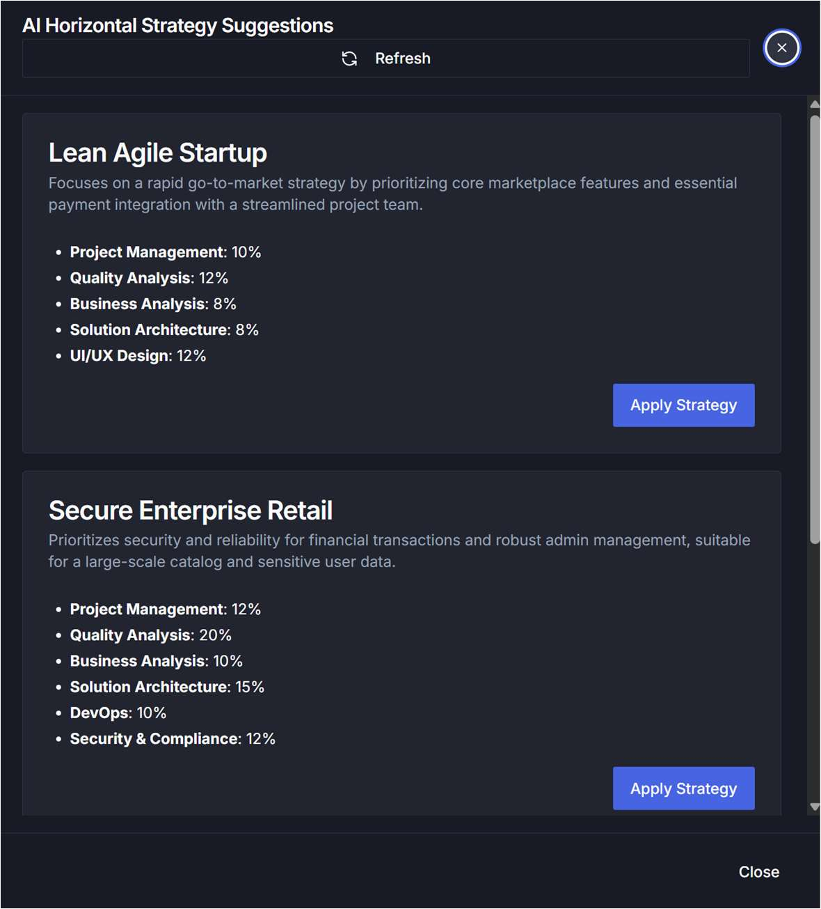
3.3 Automated Baseline Effort Estimator
With systems and horizontals defined, click AI Estimator. The engine computes global benchmark effort in man-days, applies daily billing rates, and calculates the total development and grand total cost for proposal sign-off.
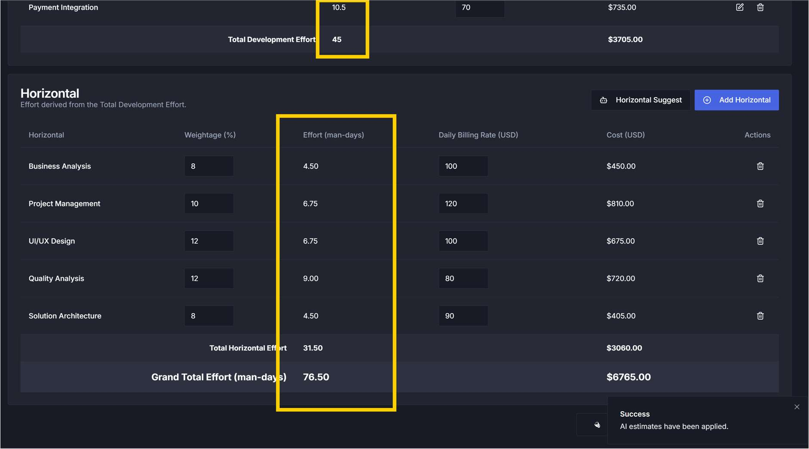
4. Project Execution & Agile Engineering
Workwayz provides engineering leads and project managers with unified tools to deliver hybrid, multi-system initiatives on time.
4.1 Executive PM Command Dashboard
Tracks overall project trajectory across sprints and releases. Features:
- Release & Sprint Burn Progression: Visual donut completion meters.
- Workload Breakdown: Distinguishes feature/story development hours from bug-fixing rework hours. Heavy bug-fixing hours immediately flag architectural deficiencies.
- Resource Cost: Billed revenue vs actual internal resource expense.
- Kanban Swim Lane Dwell Time: Detects bottlenecks across handover phases.

4.2 Capacity Planning & Daily Worklog
Forecast capacity sprint-by-sprint broken down by architectural component (e.g. Middleware API, Web Frontend, Auth, Database). Engineers log time daily against assigned items, capturing actuals for cost variance analysis.
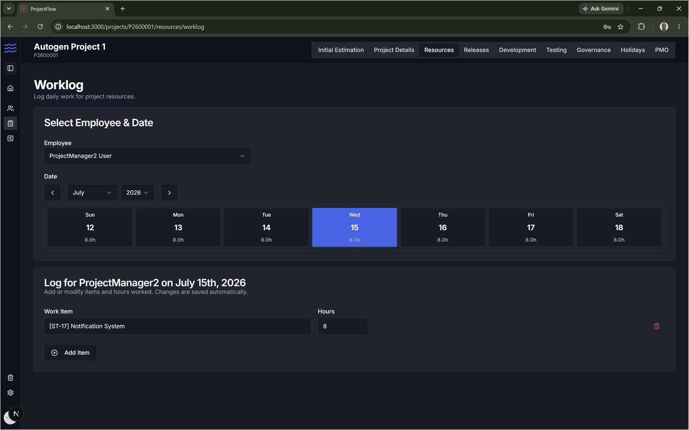
4.3 Enterprise Release Trains
For hybrid enterprise contracts where fixed budgets must align with corporate release trains, Workwayz provides an interactive timeline detailing Design Freeze, Development, Testing, and Code Freeze milestones.
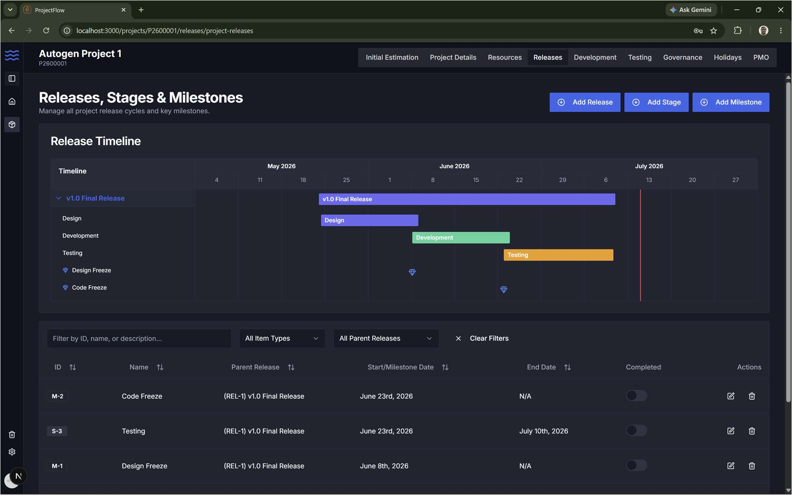
4.4 Backlog & Story Points ↔ Hours Bridge
Organize requirements by Epics, User Stories, Feature Changes, and Tasks. A built-in converter bridges story point velocity with billable hours to satisfy contractual reporting without slowing engineers down.
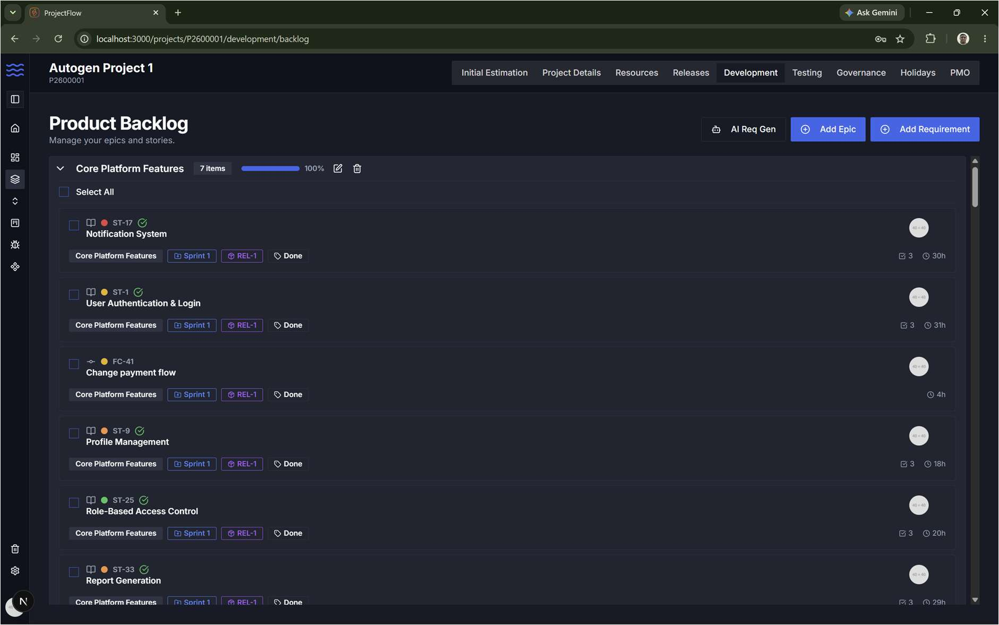
4.5 Architectural Sub-Tasks & Grooming Board
Tech leads can elaborate stories into system-specific sub-tasks (Frontend, Middleware, DB) and assign them in bulk. The Grooming Board visually displays sprint readiness: only stories with green checkmarks (all impacted systems estimated) may enter the sprint.

4.6 Dual Perspective Kanban Board
Toggle between high-level User Story progression and granular Sub-Task execution. Filter by assignee to run focused daily standups.
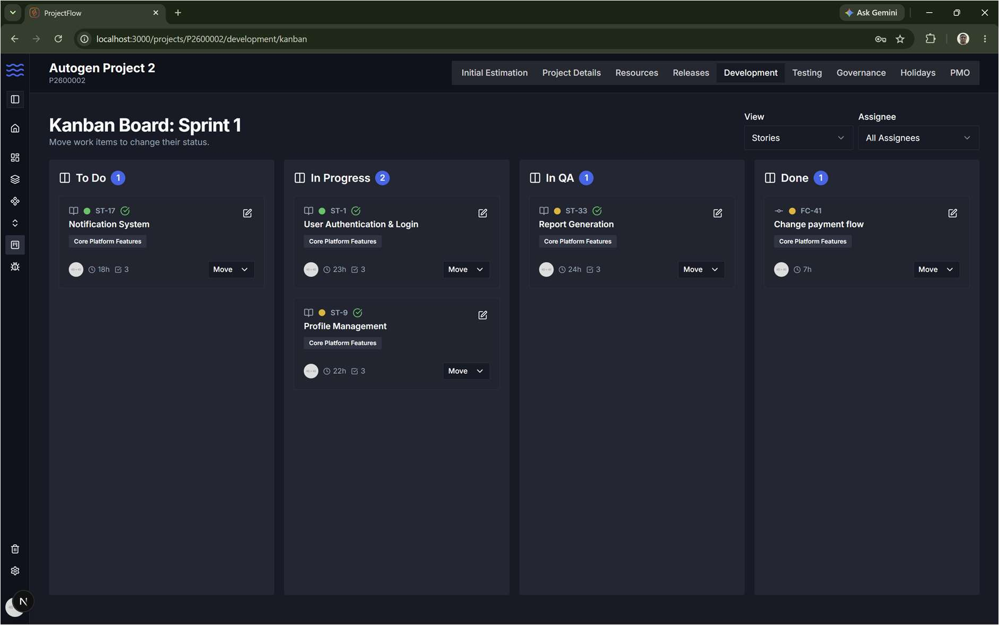
5. Quality Assurance & Defect Leakage
Native QA management without expensive third-party plugins. Track test execution velocity, defect leakage across phases, and 100% story test coverage.
5.1 Testing Dashboard & Defect Leakage Metrics
Monitors bug count across SIT (System Integration Testing), UAT (User Acceptance Testing), and Production. Visual charts reveal whether bugs are caught early or escaping to users.

5.2 Dedicated Defect Triage Kanban
Manage defects independently through a structured triage flow: In Triage → Defect Backlog → In Progress → Retest → Closed. Defects link directly to original user stories for complete traceability.
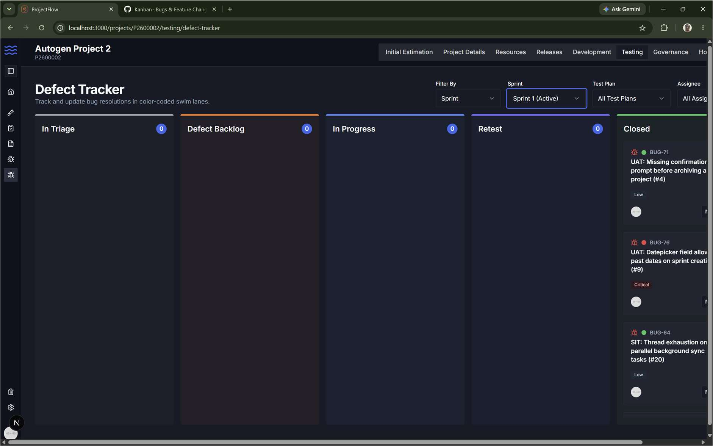
6. Project Financials, Margins & Invoicing
Seamlessly calculate profitability across Fixed Bid and Time & Material contracting models.
6.1 Fixed Bid (FB) Billing & Milestones
Tracks resource billing rates against actual cost rates to calculate net profit. Captures fixed costs (GIT licenses, cloud hosting, setup fees) and monitors milestone payment history with audit logging.
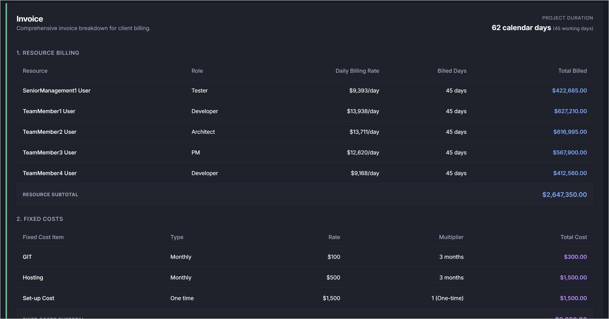
6.2 Time & Material (T&M) Monthly Invoicing
Generates monthly invoices derived from active working days, deducting individual Loss of Pay (LOP) days and adding billable overtime.
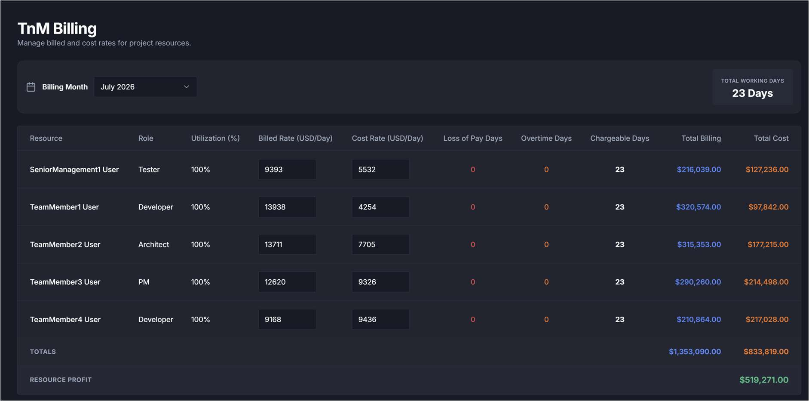
7. RAID Governance, PMO & Business Continuity
Keep enterprise portfolios compliant, insured, and resilient against turnover.
7.1 AI RAID Intelligence
Click AI Risk Generator, AI Gen Assumptions, or AI Gen Dependencies to automatically extract risks and third-party bottlenecks from project specifications.

7.2 PMO Document Verification Gateways
Centralizes links to critical governance documents (SOW, QA Sign-Off, HLD/LLD, Architecture Approvals). Enforces corporate policy: SOW required to commence coding, QA Sign-Off strictly mandatory before production promotion.
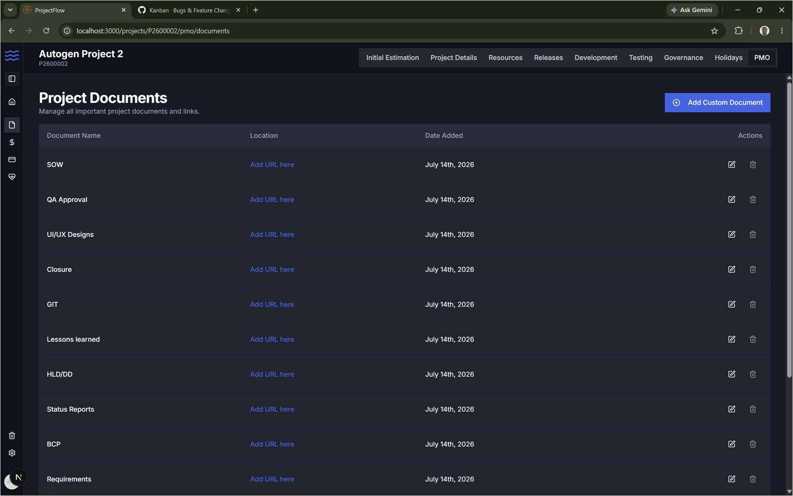
7.3 Business Continuity Plan (BCP) Vault
Maintains environment URLs, SSL/domain expiry dates, git repositories, and designated backup resources to safeguard against developer attrition or emergency incidents.
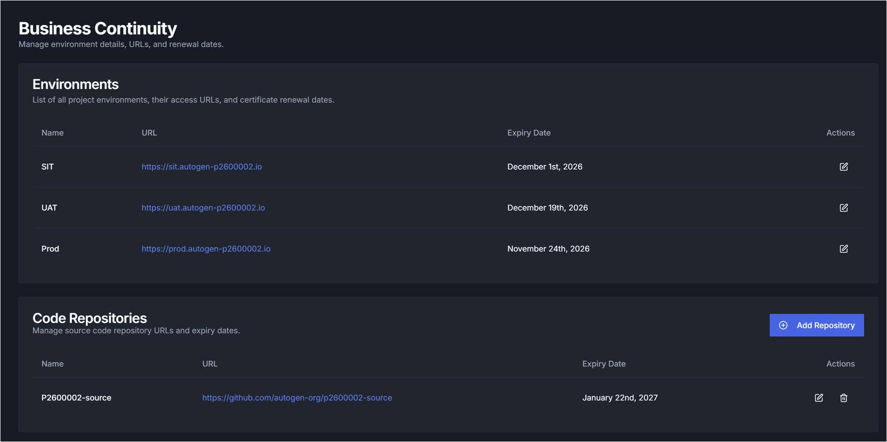
7.4 Enterprise Role-Based Access Control (RBAC)
Configure granular page-level and CRUD-level permissions across 6 system roles: Administrator, Senior Management, Project Manager, Tech Lead, Team Member, and PMO Auditor.
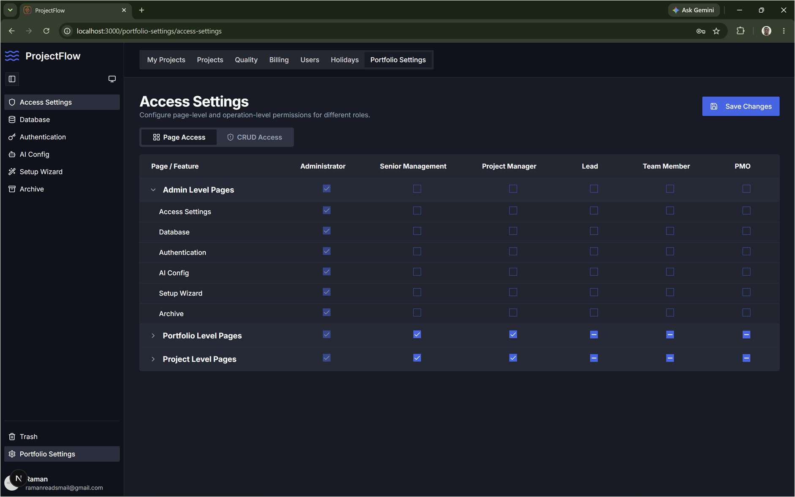